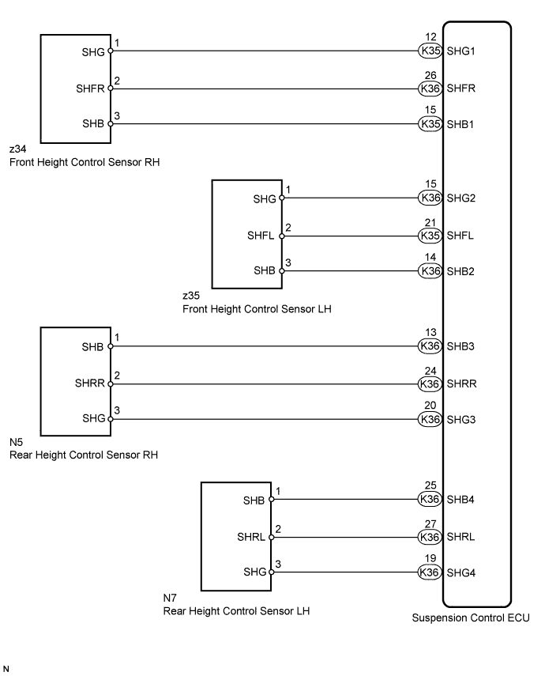
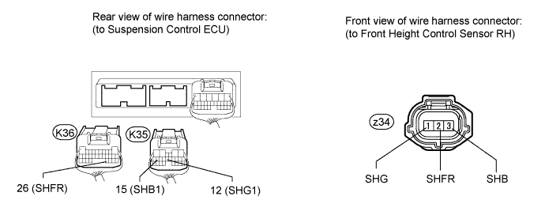
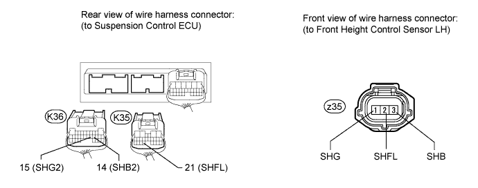
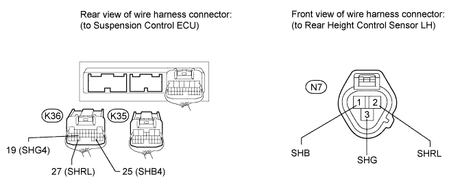
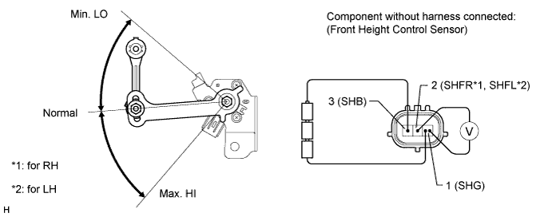
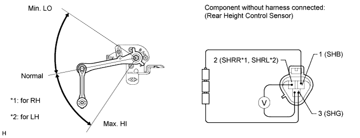

DTC C1711 Front Height Control Sensor RH Circuit Malfunction |
DTC C1712 Front Height Control Sensor LH Circuit Malfunction |
DTC C1713 Rear Height Control Sensor RH Circuit Malfunction |
DTC C1714 Rear Height Control Sensor LH Circuit Malfunction |
| DTC Code | Detection Condition | Trouble Area |
| C1711 | When one of the following conditions is met:
|
|
| C1712 | When one of the following conditions is met:
|
|
| C1713 | When one of the following conditions is met:
|
|
| C1714 | When one of the following conditions is met:
|
|

| 1.CHECK HARNESS AND CONNECTOR (HEIGHT CONTROL SENSOR - SUSPENSION CONTROL ECU) |
Check the front height control sensor RH side: (C1711)
Disconnect the K35 and K36 ECU connectors.
Disconnect the z34 sensor connector.
Measure the resistance according to the value(s) in the table below.

| Tester Connection | Condition | Specified Condition |
| z34-1 (SHG) - K35-12 (SHG1) | Always | Below 1 Ω |
| z34-2 (SHFR) - K36-26 (SHFR) | Always | Below 1 Ω |
| z34-3 (SHB) - K35-15 (SHB1) | Always | Below 1 Ω |
| z34-1 (SHG) - Body ground | Always | 10 kΩ or higher |
| z34-2 (SHFR) - Body ground | Always | 10 kΩ or higher |
| z34-3 (SHB) - Body ground | Always | 10 kΩ or higher |
Check the front height control sensor LH side: (C1712)
Disconnect the K35 and K36 ECU connectors.
Disconnect the z35 sensor connector.
Measure the resistance according to the value(s) in the table below.

| Tester Connection | Condition | Specified Condition |
| z35-1 (SHG) - K36-15 (SHG2) | Always | Below 1 Ω |
| z35-2 (SHFL) - K35-21 (SHFL) | Always | Below 1 Ω |
| z35-3 (SHB) - K36-14 (SHB2) | Always | Below 1 Ω |
| z35-1 (SHG) - Body ground | Always | 10 kΩ or higher |
| z35-2 (SHFL) - Body ground | Always | 10 kΩ or higher |
| z35-3 (SHB) - Body ground | Always | 10 kΩ or higher |
Check the rear height control sensor RH side: (C1713)
Disconnect the K35 and K36 ECU connectors.
Disconnect the N5 sensor connector.
Measure the resistance according to the value(s) in the table below.
| Tester Connection | Condition | Specified Condition |
| N5-3 (SHG) - K36-20 (SHG3) | Always | Below 1 Ω |
| N5-2 (SHRR) - K36-24 (SHRR) | Always | Below 1 Ω |
| N5-1 (SHB) - K36-13 (SHB3) | Always | Below 1 Ω |
| N5-3 (SHG) - Body ground | Always | 10 kΩ or higher |
| N5-2 (SHRR) - Body ground | Always | 10 kΩ or higher |
| N5-1 (SHB) - Body ground | Always | 10 kΩ or higher |
Check the rear height control sensor LH side: (C1714)
Disconnect the K35 and K36 ECU connectors.
Disconnect the N7 sensor connector.
Measure the resistance according to the value(s) in the table below.

| Tester Connection | Condition | Specified Condition |
| N7-3 (SHG) - K36-19 (SHG4) | Always | Below 1 Ω |
| N7-2 (SHRL) - K36-27 (SHRL) | Always | Below 1 Ω |
| N7-1 (SHB) - K36-25 (SHB4) | Always | Below 1 Ω |
| N7-3 (SHG) - Body ground | Always | 10 kΩ or higher |
| N7-2 (SHRL) - Body ground | Always | 10 kΩ or higher |
| N7-1 (SHB) - Body ground | Always | 10 kΩ or higher |
|
| ||||
| OK | |
| 2.INSPECT HEIGHT CONTROL SENSOR |
Check the front height control sensor:
Remove the front height control sensor RH or front height control sensor LH (Click here).

Connect 3 1.5 V dry cell batteries in series.
Connect the positive (+) end of the batteries to terminal 3 (SHB) of the height control sensor and the negative (-) end of the batteries to terminal 1 (SHG). While slowly moving the sensor link up and down, measure the voltage between terminal 2 (SHFR*1 or SHFL*2) and terminal 1 (SHG).
Measure the voltage according to the value(s) in the table below.
| Tester Connection | Condition | Specified Condition |
| 2 (SHFR) - 1 (SHG) | Max. HI | Approx. 4.1 V |
| Normal | Approx. 2.25 V | |
| Min. LO | Approx. 0.45 V |
| Tester Connection | Condition | Specified Condition |
| 2 (SHFL) - 1 (SHG) | Max. HI | Approx. 4.1 V |
| Normal | Approx. 2.25 V | |
| Min. LO | Approx. 0.45 V |
Check the rear height control sensor.
Remove the rear height control sensor RH or rear height control sensor LH (Click here).

Connect 3 1.5 V dry cell batteries in series.
Connect the positive (+) end of the batteries to terminal 1 (SHB) of the height control sensor and the negative (-) end of the batteries to terminal 3 (SHG). While slowly moving the sensor link up and down, measure the voltage between terminal 2 (SHRR*1 or SHRL*2) and terminal 3 (SHG).
Measure the voltage according to the value(s) in the table below.
| Tester Connection | Condition | Specified Condition |
| 2 (SHRR) - 3 (SHG) | Max. HI | Approx. 4.1 V |
| Normal | Approx. 2.25 V | |
| Min. LO | Approx. 0.45 V |
| Tester Connection | Condition | Specified Condition |
| 2 (SHRL) - 3 (SHG) | Max. HI | Approx. 4.1 V |
| Normal | Approx. 2.25 V | |
| Min. LO | Approx. 0.45 V |
| Result | Proceed to |
| OK | A |
| Front height control sensor RH malfunction | B |
| Front height control sensor LH malfunction | C |
| Rear height control sensor RH malfunction | D |
| Rear height control sensor LH malfunction | E |
|
| ||||
|
| ||||
|
| ||||
|
| ||||
| A | ||
| ||